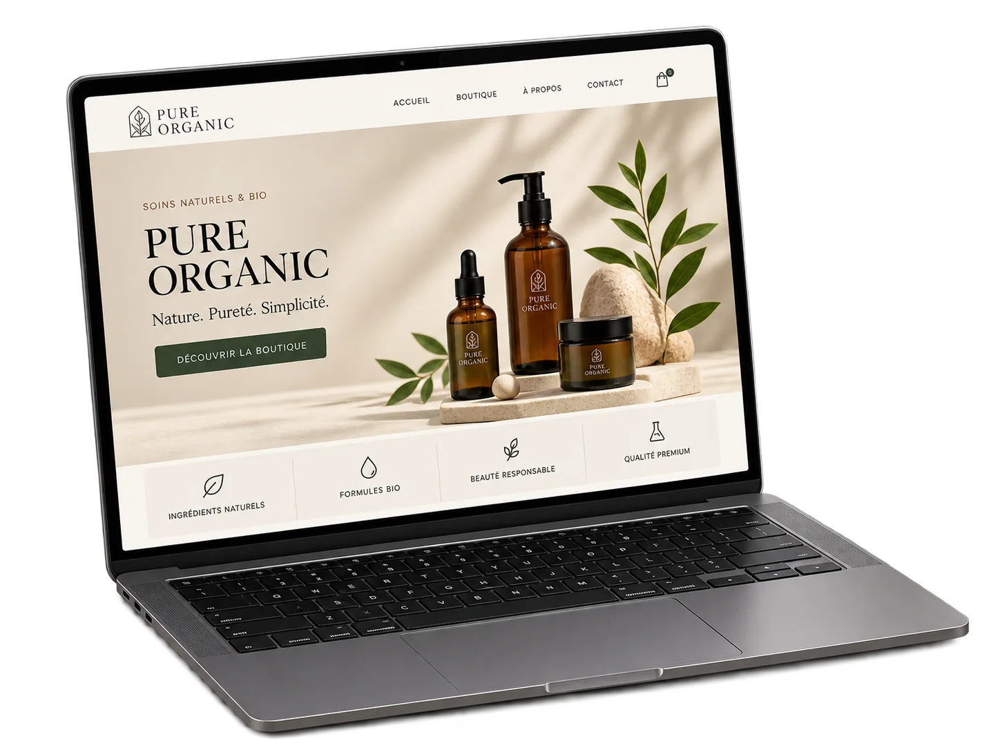
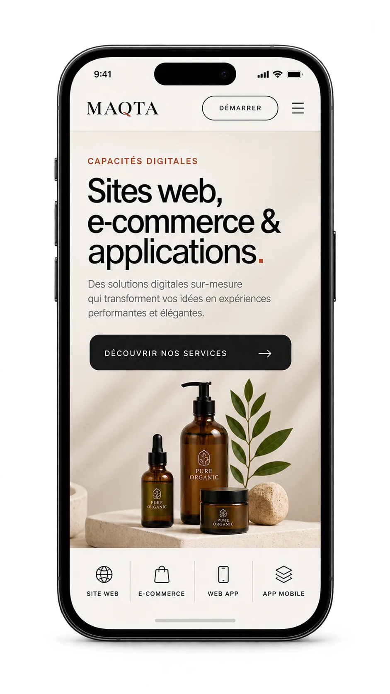
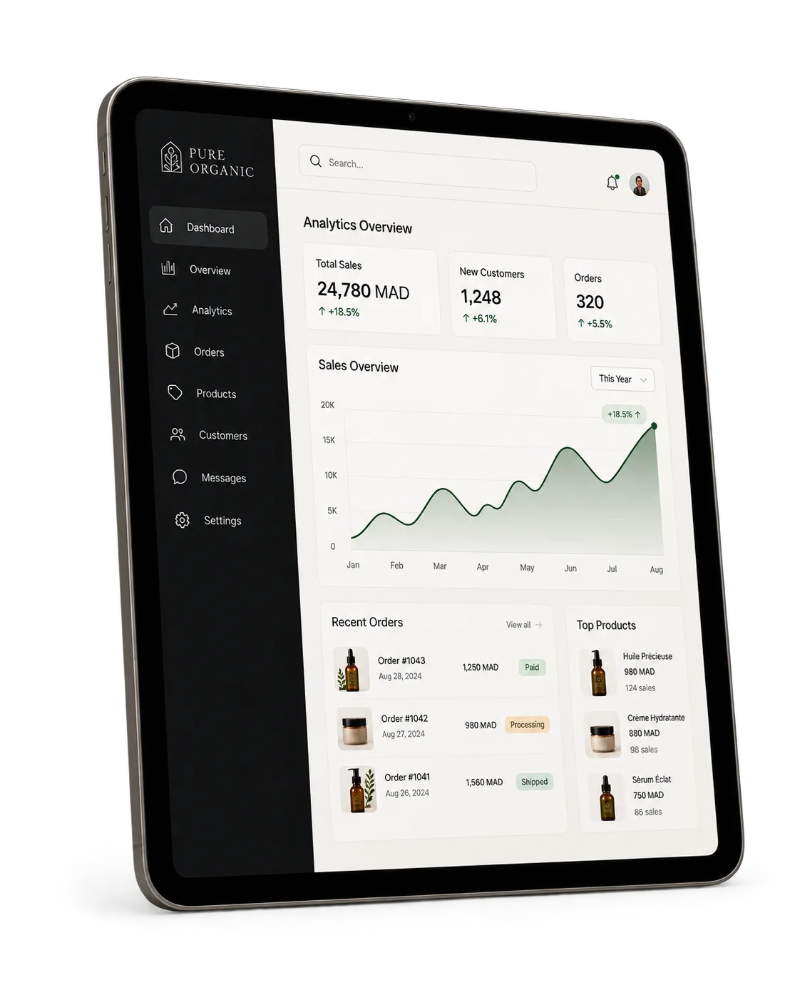
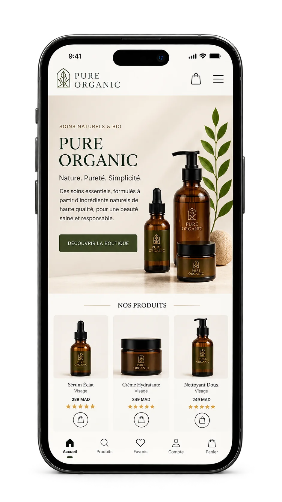

01
Sites vitrines & landing pages
Des pages rapides à comprendre pour présenter l’offre, renforcer la crédibilité et orienter le visiteur vers une prise de contact ou une action précise.
Sites vitrines, landing pages, boutiques e-commerce, web apps et applications mobiles : nous concevons des expériences digitales claires, responsive et cohérentes avec votre identité de marque.


Nous commençons par votre objectif : présenter une activité, générer des demandes, vendre en ligne ou créer un outil métier. L’architecture, le contenu, l’interface et les fonctionnalités sont ensuite pensés autour de ce besoin réel.
Chaque format répond à un usage différent. Nous définissons le bon périmètre avant de designer ou développer.
Des pages rapides à comprendre pour présenter l’offre, renforcer la crédibilité et orienter le visiteur vers une prise de contact ou une action précise.
Catalogue, fiches produits, panier et parcours d’achat structurés autour de la marque et de la simplicité d’utilisation sur ordinateur comme sur mobile.

Tableaux de bord, espaces clients, formulaires avancés et outils web dont les écrans et fonctions sont définis à partir du workflow réel du projet.

Interfaces mobiles pensées pour les usages tactiles, avec navigation, contenu et fonctionnalités définis selon le cahier des charges et les priorités du produit.
Un beau design ne suffit pas. La structure doit aussi être claire pour l’utilisateur, les moteurs de recherche et les appareils qui affichent le site.
Une expérience lisible et utilisable sur mobile, tablette et desktop.
Des titres, contenus et appels à l’action organisés pour faciliter la compréhension.
HTML sémantique, métadonnées, liens internes et images descriptives intégrés proprement.
Images optimisées, chargement raisonné et code adapté au périmètre du projet.
Un processus simple permet de valider les décisions importantes avant de passer à l’étape suivante.